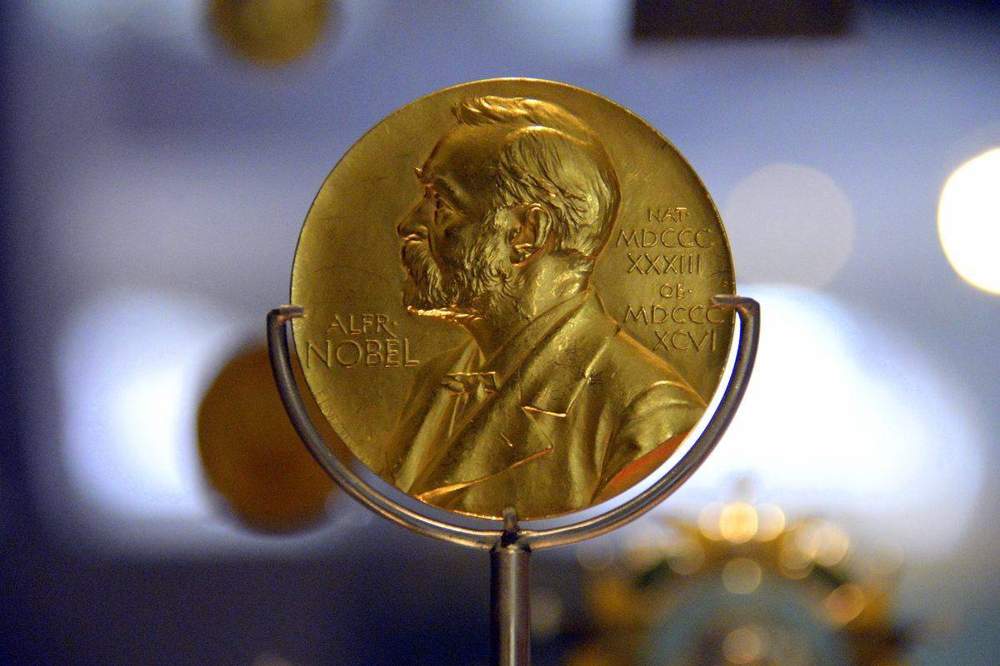

नोबेल पुरस्कार 2026: भौतिकी का नोबेल फ्रांसिस हाल्ज़ेन को — दक्षिणी ध्रुव की बर्फ में ब्रह्मांडीय न्यूट्रिनो की खोज

भौतिकी का नोबेल पदक — 2026 में यह सम्मान आइसक्यूब न्यूट्रिनो वेधशाला और उच्च-ऊर्जा ब्रह्मांडीय न्यूट्रिनो की खोज के लिए फ्रांसिस हाल्ज़ेन को दिया गया। (छवि: विकिमीडिया कॉमन्स)
स्टॉकहोम की रॉयल स्वीडिश विज्ञान अकादमी ने 6 अक्टूबर 2026 को भौतिकी का नोबेल पुरस्कार घोषित कर दिया है। इस वर्ष यह प्रतिष्ठित सम्मान अकेले फ्रांसिस हाल्ज़ेन को दिया गया है, जो अमेरिका के विस्कॉन्सिन-मैडिसन विश्वविद्यालय में प्रोफेसर हैं। इन्हें यह पुरस्कार "आइसक्यूब न्यूट्रिनो वेधशाला में निर्णायक योगदान और खगोलभौतिकीय मूल के उच्च-ऊर्जा न्यूट्रिनो की खोज" के लिए मिला है।
न्यूट्रिनो ब्रह्मांड के सबसे रहस्यमय कण हैं — वे हर जगह मौजूद हैं, पर खुद को जाहिर नहीं करते। वे पूरी पृथ्वी के आर-पार और हमारे शरीर के बीच से बिना हमें छुए गुजर जाते हैं। बहुत कम ही कोई एक न्यूट्रिनो किसी परमाणु नाभिक से टकराता है, और तभी सही उपकरणों से उसे पकड़ा जा सकता है।
खोज की कहानी: फ्रांसिस हाल्ज़ेन ने 1988 में पहली बार यह क्रांतिकारी विचार रखा कि दक्षिणी ध्रुव की बर्फ का इस्तेमाल न्यूट्रिनो को पकड़ने के लिए किया जा सकता है। जब कोई न्यूट्रिनो परमाणु नाभिक से टकराता है, तो प्रकाश की एक चमक पैदा होती है, जिसे साफ हिमनदीय बर्फ में लगाए गए सेंसरों से ट्रैक किया जा सकता है। दक्षिणी ध्रुव की बर्फ के कई फायदे हैं — यह कई तरह के व्यवधानों से मुक्त है और यह क्षेत्र भूकंपीय रूप से स्थिर है, यानी वहां भूकंप नहीं आते। हाल्ज़ेन के इस विचार को जल्द ही अन्य शोधकर्ताओं का समर्थन मिला और कुछ ही वर्षों में बर्फ में सेंसरों का प्रारंभिक परीक्षण किया गया।
ब्रह्मांडीय न्यूट्रिनो अत्यंत उच्च ऊर्जा वाले और बहुत दुर्लभ होते हैं, इसलिए उन्हें देखने के लिए बर्फ का विशाल आयतन चाहिए। आइसक्यूब पूरे एक घन किलोमीटर में फैला है और 2011 में पूरा हुआ। शोधकर्ताओं ने जल्द ही पहले उच्च-ऊर्जा न्यूट्रिनो खोज निकाले और कुछ वर्षों बाद यह प्रकाशित किया कि ये न्यूट्रिनो हमारे सौरमंडल से बहुत दूर से आते हैं। इसके बाद ब्रह्मांड के न्यूट्रिनो स्रोतों की खोज गंभीरता से शुरू हो सकी।
क्यों है यह महत्वपूर्ण: वैज्ञानिक लंबे समय से जानते हैं कि ब्रह्मांड में प्राकृतिक कण त्वरक मौजूद हैं, जो पृथ्वी की प्रयोगशालाओं में संभव ऊर्जा से दस लाख गुना अधिक ऊर्जा वाले कण छोड़ते हैं। इन स्रोतों के बारे में बहुत कुछ रहस्यमय है — वे क्या हैं, कहां हैं, और उनके अंदर मुख्य प्रक्रियाएं क्या हैं? अत्यंत उच्च ऊर्जा वाले न्यूट्रिनो इन्हीं वातावरणों में अन्य कणों के साथ बनते हैं। लेकिन अन्य कणों के विपरीत, न्यूट्रिनो दिशा बदले या ऊर्जा खोए बिना हम तक पहुंचते हैं — यानी वे ऐसी जानकारी दे सकते हैं जो किसी और तरीके से उपलब्ध नहीं है। भौतिकी की नोबेल समिति के अध्यक्ष मार्क पियर्स ने कहा, "फ्रांसिस हाल्ज़ेन ने शोधकर्ताओं और इंजीनियरों की एक अंतरराष्ट्रीय टीम का नेतृत्व किया है, जिसने हमें एक शानदार उपकरण दिया है। उनकी दृढ़ता और वैज्ञानिक दृष्टि ने एक नए तरह के खगोलविज्ञान का मार्ग प्रशस्त किया है।"
विजेता का परिचय: फ्रांसिस हाल्ज़ेन का जन्म 1944 में बेल्जियम के टिएनन शहर में हुआ। उन्होंने 1969 में बेल्जियम के ही केयू ल्यूवेन विश्वविद्यालय से पीएचडी की। वे वर्तमान में अमेरिका के विस्कॉन्सिन-मैडिसन विश्वविद्यालय में प्रोफेसर हैं। उन्हें 1.2 करोड़ स्वीडिश क्रोनर की पुरस्कार राशि मिलेगी।
पिछला वर्ष: उल्लेखनीय है कि 2025 का भौतिकी नोबेल जॉन क्लार्क, मिशेल डेवोरे और जॉन मार्टिनिस को विशाल स्तर पर क्वांटम टनलिंग के प्रदर्शन के लिए दिया गया था।
नोबेल सप्ताह जारी: भौतिकी के बाद रसायन विज्ञान (7 अक्टूबर), साहित्य (8 अक्टूबर), शांति (9 अक्टूबर) और अर्थशास्त्र (12 अक्टूबर) के पुरस्कारों की घोषणा होगी।
स्रोत: nobelprize.org (आधिकारिक प्रेस विज्ञप्ति), रॉयल स्वीडिश विज्ञान अकादमी